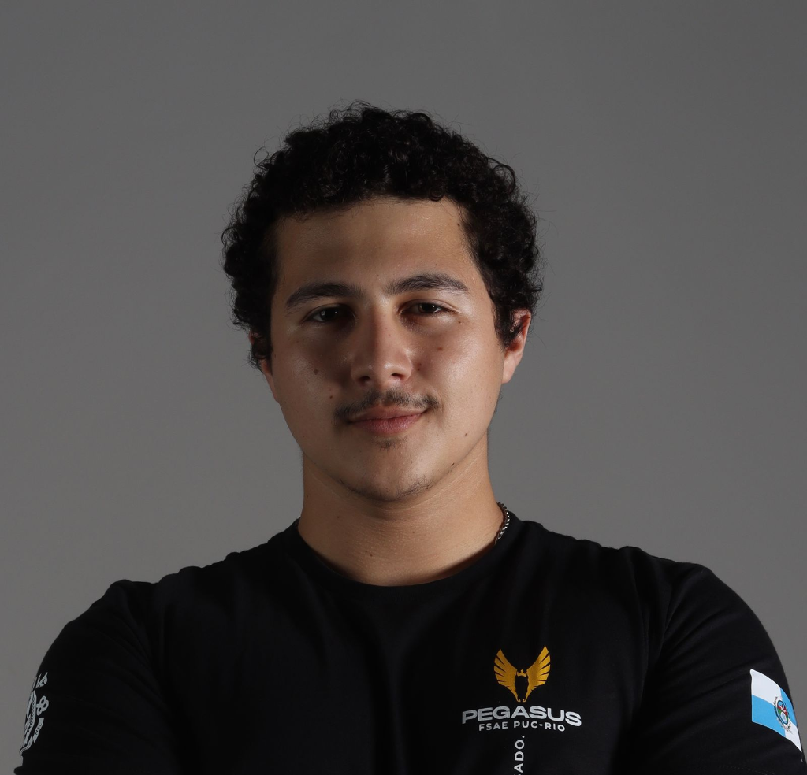
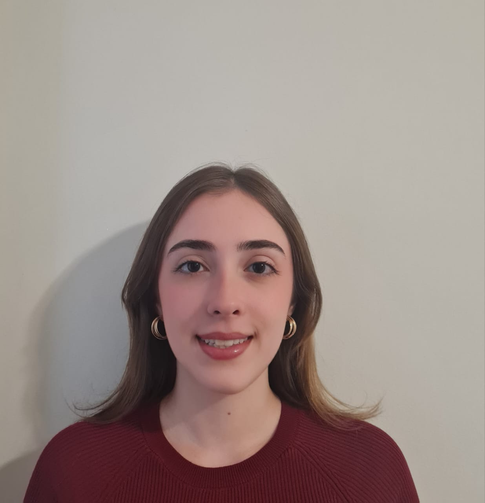

CIÊNCIA DE DADOS APLICADA À ECONOMIA.
Núcleo discente de inteligência analítica da PUC-Rio. Desenvolvemos capacitação prática em IA, bancos de dados e programação estatística, conectando alunos de graduação às principais instituições do mercado de capitais e consultorias.
Formação Técnica Rigorosa
Módulos de IA prática (LLMs e agentes), SQL direto na fonte, Power BI, Excel analítico e R com dplyr.
Conexão com o Mercado
Workshops, visitas institucionais e conferências com as maiores gestoras, bancos e consultorias do país.
Pesquisa & Código Aberto
Projetos empíricos reais e ferramentas públicas como o pacote brfinance para séries macroeconômicas.
Diretoria Atual — Gestão 2026.2
Responsáveis pela coordenação executiva, capacitação técnica, projetos e relacionamento institucional do núcleo.

Gerônimo Pulitini
Vitor Pompeu
Guilherme Bastos
Mateus França

Maria Luiza Oliveira
Danilo Rogozinski
Capacitação EconData
Estrutura curricular prática concebida para capacitar membros em ferramentas modernas de análise e engenharia de dados.
IA na Prática
Capacitação focada em aplicações contemporâneas de inteligência artificial na rotina analítica econômica e financeira:
- Entender a arquitetura e funcionamento de Large Language Models (LLMs).
- Construir e orquestrar agentes de IA no dia a dia analítico.
- Aplicar Codex para acelerar resolução de problemas analíticos reais.
Fundamentos de R
A espinha dorsal estatística do núcleo continua presente com o ferramental mais exigido em macroeconomia empírica:
- Tipos de dados, estruturas vetoriais e lógicas condicionais.
- Criação e modularização de funções analíticas.
- Manipulação robusta de dados tabulares com dplyr e tidyverse.
- Visualização estatística e confecção de gráficos em R.
Excel & Analytics
Domínio das ferramentas analíticas de planilha exigidas pelas principais mesas e gestoras:
- Modelagem avançada de planilhas financeiras.
- Funções lógicas, matriciais e tratamento de dados com Power Query.
- Conexão com fontes externas de dados para atualização contínua.
Consulta Direto na Fonte
Consultar, filtrar, agregar e cruzar dados estruturados diretamente nos repositórios e bases relacionais.
Modelagem & Conexão
Organizar relacionamentos, normalização e conectar as tabelas estruturais de cada projeto analítico.
Dashboards Interativos
Transformar tabelas modeladas em painéis dinâmicos e intuitivos para tomada de decisão executiva.
Processo Seletivo
Como ingressar no EconData Analytics da PUC-Rio. Avaliamos motivação, curiosidade analítica e potencial de aprendizado.
Informações Iniciais
Preenchimento da ficha cadastral do candidato com dados acadêmicos, disponibilidade de horários e trajetória no curso de graduação.
Questionário & Vídeo
Envio de questionário aprofundado de interesse e breve apresentação em vídeo demonstrando motivação, fit cultural e expectativas com o núcleo.
Teste de Competências
Avaliação prática voltada ao raciocínio lógico, capacidade de resolução de problemas e aptidão para o aprendizado quantitativo.
Projetos & Ferramentas Open Source
brfinance
Pacote em R desenvolvido por um ex-membro do EconData que facilita o acesso a dados macroeconômicos brasileiros. Com poucas linhas de código, é possível baixar e visualizar indicadores como taxa Selic, inflação e desemprego, utilizando dados oficiais do Banco Central e IBGE, além de gerar gráficos comparativos entre séries.
| Linguagem | R |
| Fontes Oficiais | BACEN & IBGE |
| Séries | Selic, IPCA, Desemprego |
| Origem | Ex-membro EconData |
Redes Neurais para Economia
Material instrucional e código prático aplicado para estudantes de graduação, demonstrando a arquitetura e calibração de redes neurais profundas aplicadas à modelagem de séries econômicas.
| Formato | Aula Aberta à PUC-Rio |
| Tópicos | Perceptron, MLP, Backprop |
| Público | Graduação em Economia |
| Apoio | Depto. de Economia |
Ambiente Analítico Integrado
Estruturação dos pipelines de dados unindo extração automatizada via SQL, engenharia de dados em bancos locais e geração de relatórios dinâmicos para tomada de decisão.
| Objetivo | Padrão Mercado |
| Ferramental | SQL, Power BI, Excel |
| Ciclo | Formação Contínua |
| Coordenação | Diretoria de Projetos |
Vertentes de Ciência de Dados do Núcleo
Da coleta e tratamento de bases complexas à modelagem preditiva e visualização para tomada de decisão.
Data Mining & Descoberta
Extração de padrões ocultos em bases massivas, segmentação e agrupamento aplicados a microdados e comércio internacional.
Data Visualization & Dashboards
Comunicação analítica eficaz com gráficos estatísticos e dashboards interativos para tornar tendências macroeconômicas intuitivas.
Big Data & Fontes Alternativas
Tratamento e combinação de bases estruturadas de alta frequência (APIs do Banco Central, SIDRA/IBGE e dados públicos).
Text Analysis & Atas do COPOM
Mineração de texto e processamento de linguagem natural (NLP) para mensurar sentimento e tom em comunicados de política monetária.
Machine Learning Preditivo
Modelos de árvores e regressões regularizadas para identificar relações não lineares e projetar indicadores de atividade econômica.
Spatial Analysis & Geoprocessamento
Análise econométrica espacial com dados georreferenciados para avaliar desenvolvimento regional e mercado de trabalho.
Visitas Institucionais & Palestras
Aproximando os alunos de economia das principais instituições financeiras, gestoras e consultorias do país.
BTG Pactual
Visita ao maior banco de investimentos da América Latina para imersão em mesas de operações, research e sales.
Itaú Asset Management
Apresentação com gestores e analistas sobre alocação de ativos, gestão quantitativa e oportunidades de estágio.
Banco BOCOM BBM
Tour institucional com recepção executiva e imersão macro com equipes de economia e mercado de capitais.
Visagio Consultoria
Imersão com consultores sobre a rotina de consultoria de gestão e aplicação prática de analytics em negócios.
Civitas Rio
Encontro em parceria com o NEA para conhecer o ecossistema e projetos analíticos aplicados ao desenvolvimento carioca.
Armínio Fraga & Lideranças
Ciclo de debates de alto nível com Armínio Fraga, David Cohen, José Márcio Camargo e Vitor Pereira.
Bruno Bondarovsky
Palestra compartilhando experiências práticas sobre gestão, finanças e tomada de decisão fundamentada em dados.
Erick Coser (Datarisk)
Visão prática sobre fundação de empresas de inteligência analítica e desafios de ciência de dados no ecossistema brasileiro.